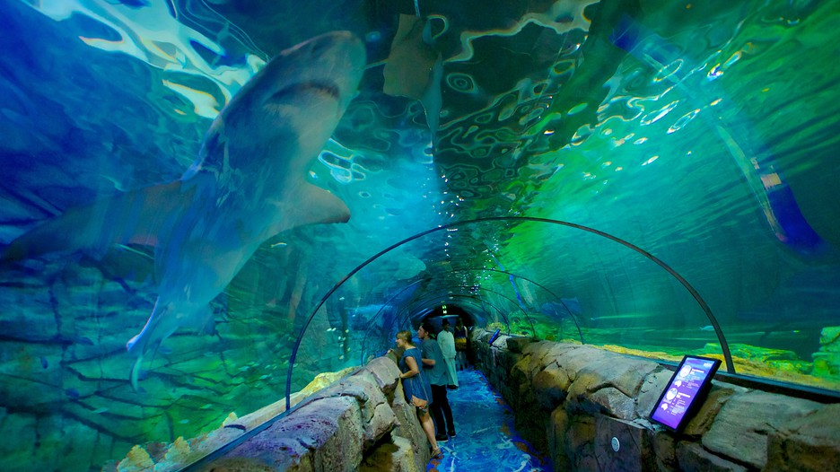

Sitios Turisticos
Sydney Opera House

Este edificio es una atraccion turistica muy popular por la forma inusual del techo y la maravillosa vista que tiene hacia el Sydney Harbour.
La Opera House fue hecho por un arquitecto Danes llamado, Jorn Utzon y se termino en 1973. La forma del techo esta inspirado en la apertura de las hojas de palma.
Es una de las construcciones patrimonio de la humanidad por su belleza y estructura. En la Opera House se llevan a cabo variados espectaculos desde ballet hasta opera, con musicales y conciertos. Tambien puedes hacer un tour por la Opera House a traves de una visita guiada en donde te explicaran la historia y estructura de la construccion.
Harbour Bridge de Sydney

El Sydney Harbour Bridge es una de las referencias Australianas mas conocidas. Es el puente mas grande (pero no el mas largo) del mundo por su arco de acero con la parte superior del puente a 134 metros de altura sobre el puerto. El puente conecta la parte norte y sur de Sydney. Este puente se abrio al publico en 1932.
Torre de Sydney
En la torre de Sydney, pagas un ticket y tomas un ascensor que te lleva al extremo superior de la torre, al Observation Deck. Desde ahi podras disfrutar de una vista panoramica de Sydney Si eres mas atrevido podras ir al Skywalk que es una visita guiada al exterior de la torre de Sydney. Estaras sujeto a un cable o arnes y podras caminar sobre el suelo de cristal que forma parte de la torre. Podras ver las calles y personas debajo de tus pies a traves del suelo de cristal La torre tambien tiene en el extremo superior un restaurante que va girando lentamente mientras comes. Pero ten cuidado cuando regreses del servicio , pues seguramente tu mesa haya cambiado de lugar.
Acuario de Sydney

Sydney Aquarium es uno de los acuarios mas atractivos del mundo. Tienen algunas especies acuaticas Australianas con mas de 12.000 animales incluyendo enormes tiburones y rayas, platypus, focas, pinguinos hada y cocodrilos. El acuario se divide en secciones de acuerdo con las localidades del habitat natural de los animales (rios del norte/sur, Oceanos del norte /sur). La atraccion principal es el tunel de vidrio bajo el agua, donde los visitantes pueden ver los enormes tiburones, rayas o tortugas desde un angulo extraordinario. El acuario se situa en Darling Harbour.
Blue Mountains

Las Blue Mountains forman parte de la gran cadena rocosa, que son los escarpados que empiezan en Melbourne y atraviesan a New South Wales. El nombre Blue Mountains tiene su origen en la neblina azul que hay cuando el aceite de eucalipto se evapora de los arboles. Es uno de los mas hermosos parques nacionales de Australia y tiene una vista maravillosa desde varios de los salientes rocosos.
Byron Bay
La bahia Byron es famosa por la belleza de sus playas, que se extiende a 37 kilometros de largo Los surfistas y nadadores adoran venir y disfrutar del ambiente relajado, los cafes y los delfines y ballenas. Podras probar el paracaidismo, vuelo sin motor o montar en globo Tambien hay excelentes escuelas de Surf y buceo gracias a las buenas condiciones que tiene este lugar para ello. Byron Bay esta a 800 kilometros al norte de Sydney.